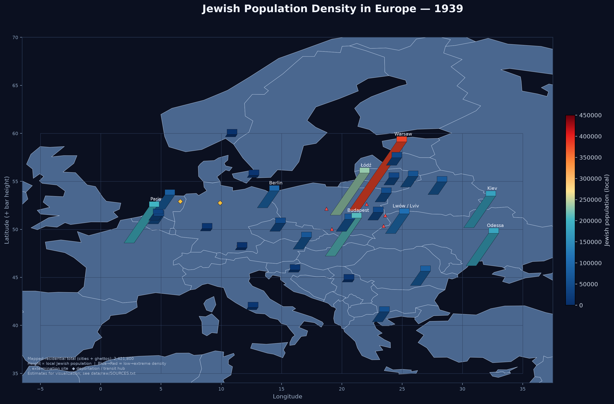

1933–1945
1933, 1935, 1937, 1938, 1939, 1940, 1941, 1942, 1943, 1944, 1945
Europe-wide cities, ghettos, hubs, and camps
Secondary educational estimates for spatial visualization.

Repository README · Data notes